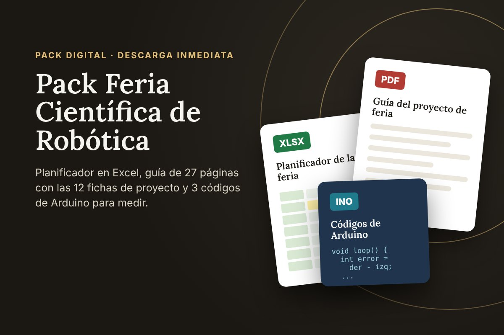
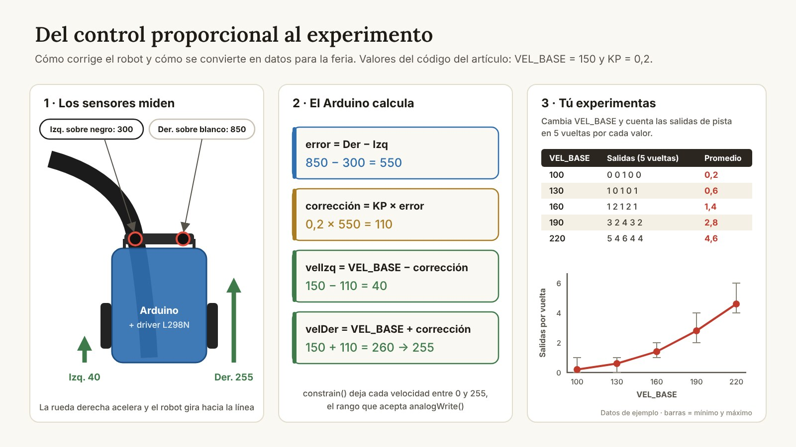

Qué cubre esta guía
- Cómo elegir el proyecto correcto
- Los 12 proyectos, de un vistazo
- Proyectos de nivel inicial (1–4)
- Proyectos de nivel intermedio (5–8)
- Proyectos de nivel avanzado (9–12)
- El método científico aplicado a la robótica
- Investigación o innovación: las ferias chilenas
- Ejemplo de código: siguelíneas con control proporcional
- Cómo presentar y qué buscan los jueces
- Preguntas frecuentes

Pack Feria Científica de Robótica: del proyecto elegido al stand
Todo lo de esta guía, convertido en herramientas para el equipo: qué proyecto elegir, cuándo hacer cada cosa, cómo medir y cómo defenderlo ante los jueces.
- Planificador en Excel (9 hojas): calendario hacia atrás desde el cierre de la postulación, puntaje de los 12 proyectos según su equipo, materiales de cada uno, dos hojas de experimento que calculan promedio, desviación, gráfico y una conclusión escrita, bitácora, rúbrica para ensayar y checklist.
- Guía en PDF (27 páginas): investigación o innovación en Explora y la FCNJ, cómo escribir la pregunta y la hipótesis, las 12 fichas de proyecto con variables, cómo medir, errores comunes y preguntas de jueces, más informe, póster y guion de 3 minutos.
- 3 códigos de Arduino comentados: siguelíneas proporcional con calibración, registro de distancia con ultrasonido y riego con registro de humedad, con datos listos para pegar en el Excel.
Al pagar descargas un archivo .zip con el planificador (.xlsx), la guía (.pdf), los códigos (.ino) y las instrucciones. El planificador se abre en Excel, LibreOffice y Google Sheets. Licencia de uso personal y para un equipo escolar. Por ser contenido digital de descarga inmediata, no tiene derecho a retracto; si un archivo llega dañado o no abre, te lo reponemos o devolvemos el dinero.
Cómo elegir el proyecto correcto
El proyecto ganador no es el más caro ni el más complicado, sino el que cruza tres criterios. Evalúa cada idea contra ellos antes de decidir:
- Interés genuino: un tema que al estudiante le importe de verdad se defiende con pasión ante los jueces y se sostiene durante las semanas de trabajo.
- Factibilidad: materiales disponibles localmente, presupuesto alcanzable y tiempo suficiente para construir, probar y repetir.
- Contenido científico medible: una variable independiente que se pueda modificar y una dependiente que se pueda medir. Sin medición no hay ciencia, solo una demostración.
Los 12 proyectos, de un vistazo
| # | Proyecto | Nivel | Concepto científico central | Guía relacionada |
|---|---|---|---|---|
| 1 | Semáforo inteligente | Inicial | Ley de Ohm y máquina de estados | Semáforo con LEDs |
| 2 | Piano electrónico | Inicial | Frecuencia y ondas sonoras | Piano con buzzer |
| 3 | Brazo robótico con servos | Inicial | Ángulos, palancas y control de posición | — |
| 4 | Detector de metales | Inicial | Inducción electromagnética | Detector de metales casero |
| 5 | Siguelíneas | Intermedio | Reflexión de luz infrarroja y control proporcional | Sensores infrarrojos para siguelíneas |
| 6 | Robot evasor de obstáculos | Intermedio | Ultrasonido y tiempo de vuelo | Radar ultrasónico |
| 7 | Estación meteorológica | Intermedio | Temperatura, humedad y registro de datos | Estación meteorológica |
| 8 | Invernadero automatizado | Intermedio | Humedad de suelo y control automático | Riego automático |
| 9 | Radar ultrasónico con Processing | Avanzado | Eco de ultrasonido y visualización de datos | Radar ultrasónico |
| 10 | Coche controlado por Bluetooth | Avanzado | Comunicación inalámbrica y control remoto | Arduino por Bluetooth |
| 11 | Clasificador por color | Avanzado | Detección de color RGB y automatización | — |
| 12 | Mano robótica | Avanzado | Biomecánica, servos y control de dedos | — |
Proyectos de nivel inicial (1–4)
1. Semáforo inteligente
Tres LEDs, tres resistencias y un Arduino: el proyecto perfecto para demostrar la Ley de Ohm y el patrón de máquina de estados (cada luz es un estado y el programa decide cuándo pasar al siguiente). Variable medible: la corriente del LED según la resistencia limitadora (por ejemplo 220 Ω, 330 Ω, 470 Ω y 1 kΩ), medida con un multímetro y comparada con el cálculo I = (5 V − VLED) / R. Si agregas un botón peatonal, también puedes medir el tiempo de espera según el momento en que se presiona. Materiales clave: Arduino Uno, 3 LEDs, resistencias, protoboard y un multímetro. Toda la construcción está en la guía técnica del semáforo.
2. Piano electrónico
Botones que hacen sonar notas en un buzzer pasivo con la función tone() (un buzzer activo emite un solo tono y no sirve para esto). El concepto central es la frecuencia: cada nota es una frecuencia distinta (el La central es 440 Hz) y subir una octava la duplica. Variable medible: la frecuencia que realmente suena frente a la programada, medida con una app de análisis de espectro en el celular. Materiales clave: Arduino, buzzer pasivo, 4 a 8 pulsadores y sus resistencias. La guía completa está en Piano Electrónico con Botones y Buzzer.
3. Brazo robótico con servos
Una estructura de cartón, madera o impresión 3D movida por dos o tres microservos (SG90 o similares). Demuestra ángulos, palancas y control de posición. Variable medible: el error de posición, es decir, la distancia en milímetros entre el punto al que debía llegar la punta y el punto al que llegó, repetida varias veces y con distintas cargas. Alimenta los servos con una fuente de 5 V aparte, con la tierra unida a la del Arduino: varios servos moviéndose a la vez pueden pedir más corriente de la que entrega la placa y la reinician. Materiales clave: Arduino, 2 o 3 microservos, fuente de 5 V y 2 A, y potenciómetros o un joystick para controlarlo.
4. Detector de metales
Una bobina forma parte de un oscilador cuya frecuencia mide el Arduino; al acercar un metal, la frecuencia cambia por inducción electromagnética. Variable medible: la distancia de detección según el tipo y el tamaño del metal. Los metales ferrosos (un clavo) y los no ferrosos (un trozo de aluminio o cobre) suelen desplazar la frecuencia en sentidos opuestos, lo que abre una segunda pregunta interesante. Materiales clave: alambre esmaltado para la bobina, transistor y condensadores para el oscilador, Arduino y un buzzer. Sigue la guía del detector de metales casero.
Proyectos de nivel intermedio (5–8)
5. Siguelíneas
Dos sensores infrarrojos (TCRT5000) puestos a ambos lados de una línea negra miden la reflexión de la luz: el blanco refleja mucho y el negro poco. El Arduino compara ambas lecturas y corrige la dirección. Es el proyecto estrella para aplicar el método científico: la variable independiente es la velocidad base programada, y la dependiente, el número de salidas de pista por vuelta (o el tiempo por vuelta). Materiales clave: chasis con dos motores DC y ruedas, driver L298N o TB6612FNG, dos sensores TCRT5000 con salida analógica y batería. Cómo funcionan y cómo se calibran los sensores está en Sensores infrarrojos para robots siguelíneas; el código está más abajo.
6. Robot evasor de obstáculos
Un robot móvil con un sensor ultrasónico HC-SR04, que mide distancias por tiempo de vuelo: emite un pulso de ultrasonido y mide cuánto tarda en volver el eco (distancia = tiempo × 343 m/s ÷ 2, con el aire a 20 °C). Su rango nominal va de 2 cm a 4 m. Variable medible: la distancia a la que el robot alcanza a detenerse según su velocidad, o qué materiales detecta peor (las superficies blandas o inclinadas devuelven menos eco). Materiales clave: chasis con dos motores, driver, HC-SR04 y, si quieres que mire a los lados, un microservo.
7. Estación meteorológica
Un sensor BME280 (temperatura, humedad y presión) y una pantalla OLED registran y muestran datos. El valor científico está en el registro de datos a lo largo de varios días y su comparación con una estación oficial cercana de la Dirección Meteorológica de Chile, cuyos datos son públicos. Pregunta posible: ¿cuánto se desvía mi estación y a qué hora del día? El sol directo sobre el sensor es la causa más común de error, así que protégelo con un abrigo ventilado. Materiales clave: Arduino o ESP32, BME280, OLED SSD1306 y un módulo microSD para guardar los datos. Guía completa en Estación Meteorológica con Arduino.
8. Invernadero automatizado
Un sensor de humedad de suelo, idealmente capacitivo (el resistivo se corroe en pocas semanas), activa una minibomba a través de un relé o un MOSFET cuando la tierra se seca. Demuestra control automático de lazo cerrado: el sistema mide, compara y actúa. Variable medible: el umbral de humedad que dispara el riego frente al consumo de agua o, si tienes tres semanas o más, el crecimiento de plantas iguales con riego automático y con riego a mano. La bomba se alimenta desde su propia fuente, nunca desde el pin de 5 V del Arduino. Materiales clave: Arduino o ESP32, sensor capacitivo, módulo de relé, minibomba de 5 V, manguera y fuente. Guía en Sistema de riego automático con sensor de humedad de suelo.
Proyectos de nivel avanzado (9–12)
9. Radar ultrasónico con Processing
Un servo barre de 15° a 165° mientras el sensor ultrasónico mide distancias y Processing dibuja un mapa tipo radar en pantalla. Combina eco de ultrasonido y visualización de datos en tiempo real. Variable medible: la separación mínima entre dos objetos para que el radar los distinga como dos, o el error de distancia según el material del objeto. Materiales clave: Arduino, HC-SR04, microservo y un computador con Processing. Guía completa en Radar con Sensor Ultrasónico y Processing.
10. Coche controlado por Bluetooth
Un vehículo de dos motores se controla desde un celular Android con el módulo HC-05, que usa Bluetooth clásico. Ojo: el iPhone no se conecta al HC-05; para iOS se necesita un módulo Bluetooth Low Energy, como el HM-10, o un ESP32. El concepto central es la comunicación inalámbrica serial. Variable medible: el alcance y el porcentaje de comandos que llegan según la distancia y los obstáculos (una pared, una persona). El pin RX del HC-05 trabaja a 3,3 V, así que va conectado al TX del Arduino a través de un divisor de tensión. Materiales clave: chasis con dos motores, driver, HC-05 (o HM-10) y batería. Guía completa en Controla tu Arduino por Bluetooth.
11. Clasificador por color
Un sensor de color (TCS3200 o TCS34725) ilumina el objeto con sus propios LEDs y mide cuánta luz roja, verde y azul refleja; un servo lo desvía al contenedor que corresponde. Aplica detección de color por reflexión de luz y automatización. Variable medible: el porcentaje de aciertos según la iluminación ambiente o la velocidad con que pasan los objetos. Calibra con las mismas piezas que llevarás a la feria, porque las lecturas cambian con la luz del lugar. Materiales clave: Arduino, sensor de color, uno o dos microservos, una rampa de cartón y piezas de colores.
12. Mano robótica
Una mano articulada, con dedos de cartón o impresos en 3D y tendones de hilo, donde cada servo tira de un dedo; se controla con un guante con sensores de flexión o con potenciómetros. Combina biomecánica y control de posición. Variable medible: el rango de agarre (los diámetros de objetos que logra sujetar) o la fuerza de agarre, medida con un sensor de fuerza FSR o apretando una balanza de cocina. Con cinco servos, la fuente externa de 5 V es obligatoria. Materiales clave: Arduino, 5 microservos, fuente de 5 V de al menos 3 A, hilo de nylon y sensores de flexión o potenciómetros.
El método científico aplicado a la robótica
Convertir una demostración en un proyecto científico requiere aplicar el método con rigor. La secuencia es la misma que en cualquier laboratorio, adaptada al hardware:
- Pregunta: formula una pregunta específica y medible. Ejemplo: "¿cómo afecta la velocidad base al número de veces que el siguelíneas pierde la línea?"
- Hipótesis: predice la relación entre variables. Ejemplo: "a mayor velocidad, más salidas de pista, porque el sensor tiene menos tiempo para reaccionar".
- Variables: identifica la independiente (velocidad), la dependiente (salidas de pista) y las controladas (misma pista, misma iluminación, misma batería).
- Experimentación: repite cada condición al menos 3 veces (mejor 5) y registra todos los resultados en una tabla, incluidos los raros.
- Análisis: calcula el promedio y cuánto varían las repeticiones (rango o desviación estándar), grafica los datos y observa la tendencia.
- Conclusión: responde a la pregunta con los datos, aceptando o rechazando la hipótesis.
Investigación o innovación: cómo encaja tu proyecto en las ferias chilenas
Antes de escribir la pregunta, revisa en qué feria vas a participar, porque cada una pide cosas distintas. Las bases cambian cada año y, en Explora, también por región; lo que sigue resume las convocatorias de 2026.
- Congresos Regionales Escolares de Explora (ANID): los proyectos se presentan en dos categorías. Investigación parte de una pregunta formulada por los estudiantes; Innovación parte de un problema o una necesidad y propone una solución de base científico-tecnológica, con un prototipo. La mayoría de los proyectos de robótica encaja en Innovación: ahí lo central no es una hipótesis sobre la naturaleza, sino el problema, los requisitos que debe cumplir el prototipo y las pruebas que demuestran que los cumple. Los equipos son de al menos dos estudiantes.
- Feria Científica Nacional Juvenil (Museo Nacional de Historia Natural): tiene un área de Tecnología que incluye informática e ingeniería. Pide equipos de dos estudiantes con un profesor asesor, un informe con resumen de hasta 300 palabras, introducción, objetivos, hipótesis, métodos, resultados, discusión y referencias en formato APA 7, y no acepta investigaciones solo bibliográficas: tiene que haber trabajo experimental.
Ejemplo de código: siguelíneas con control proporcional
El siguelíneas simple usa lógica de "si veo negro, giro; si no, avanzo". Una versión más elegante usa control proporcional: la corrección del giro es proporcional a cuán lejos está el robot del centro de la línea, lo que produce un movimiento suave en lugar de zigzagueos bruscos.

El código supone dos sensores TCRT5000 con salida analógica, uno a cada lado de la línea, que leen alto sobre blanco y bajo sobre negro, y un driver L298N (o TB6612FNG, con los mismos pines de sentido y velocidad).
// Siguelineas con control proporcional (2 sensores analogicos + driver L298N)
const int SENSOR_IZQ = A0; // sensor izquierdo
const int SENSOR_DER = A1; // sensor derecho
const int ENA = 5; // PWM velocidad motor izquierdo
const int IN1 = 7, IN2 = 8; // sentido motor izquierdo
const int ENB = 6; // PWM velocidad motor derecho
const int IN3 = 9, IN4 = 10; // sentido motor derecho
const int VEL_BASE = 150; // velocidad base (0-255): la variable del experimento
const float KP = 0.2; // ganancia proporcional: se ajusta probando
void setup() {
pinMode(ENA, OUTPUT); pinMode(IN1, OUTPUT); pinMode(IN2, OUTPUT);
pinMode(ENB, OUTPUT); pinMode(IN3, OUTPUT); pinMode(IN4, OUTPUT);
// Ambos motores hacia adelante
digitalWrite(IN1, HIGH); digitalWrite(IN2, LOW);
digitalWrite(IN3, HIGH); digitalWrite(IN4, LOW);
}
void loop() {
int lecturaIzq = analogRead(SENSOR_IZQ);
int lecturaDer = analogRead(SENSOR_DER);
// Si el sensor izquierdo pisa la linea, su lectura baja
// y el error se vuelve positivo (0 = centrado)
int error = lecturaDer - lecturaIzq;
int correccion = (int)(KP * error);
// Error positivo: la linea quedo a la izquierda,
// asi que frena la rueda izquierda y acelera la derecha
int velIzq = constrain(VEL_BASE - correccion, 0, 255);
int velDer = constrain(VEL_BASE + correccion, 0, 255);
analogWrite(ENA, velIzq);
analogWrite(ENB, velDer);
}Dos ajustes antes de la primera prueba. Si el robot se aleja de la línea en vez de corregir, invierte la resta del error (lecturaIzq - lecturaDer): algunos módulos leen alto sobre el negro. Y para KP, empieza bajo y súbelo hasta que el robot empiece a zigzaguear; luego bájalo un poco. Si con eso aún no alcanza a girar en las curvas, también ayuda bajar VEL_BASE.
Para el proyecto de feria, la variable independiente (la velocidad base VEL_BASE) se modifica entre pruebas mientras se registra la variable dependiente (salidas de pista en una pista de longitud fija). Ese experimento, con su tabla y su gráfico, es exactamente el tipo de análisis que los jueces buscan.
Cómo presentar y qué buscan los jueces
La presentación pesa tanto como el proyecto. Cada feria usa su propia pauta, pero casi todas miran estas cuatro dimensiones, y conviene preparar cada una por separado:
| Dimensión | Qué buscan | Cómo prepararse |
|---|---|---|
| Problema y pregunta | Claridad y relevancia de la pregunta de investigación | Enunciar la pregunta en una frase y repetirla al inicio de la presentación |
| Proceso y rigor | Bitácora, repeticiones, control de variables | Llevar la bitácora física y las tablas de datos con promedios y gráficos |
| Comprensión real | Explicar código y circuito, responder por qué | Ensaya explicar cada línea del código y cada conexión; anticipa preguntas |
| Comunicación | Póster claro y demostración en vivo | Póster con las secciones que pida la convocatoria (en Explora: resumen, introducción, pregunta o problema, objetivos, metodología, resultados y referencias), sin casilleros vacíos; demo ensayada con plan B |
Conclusión
Una feria científica es la oportunidad perfecta para que un proyecto de robótica se transforme en ciencia de verdad: con pregunta, hipótesis, mediciones y conclusión. Elige el proyecto por interés y factibilidad, aplica el método científico con rigor, documenta todo en la bitácora y prepara una presentación que demuestre comprensión real. Si tu equipo va un paso más allá y quiere competir formalmente, la siguiente lectura es la guía para preparar a tu equipo para competencias de robótica escolar.
Preguntas frecuentes
¿Cómo elijo el proyecto correcto para mi feria científica?
Elige un proyecto que cruce tres criterios: interés genuino del estudiante (un tema que realmente le importe se defiende mejor ante los jueces), factibilidad (que los materiales estén disponibles y el tiempo alcance para terminar y probar varias veces) y contenido científico medible (que tenga una variable que se pueda cambiar y medir). Evita proyectos que dependan de una sola prueba o de componentes difíciles de conseguir; la consistencia y la repetición valen más ante los jueces que la espectacularidad de un prototipo que funciona a medias.
¿Qué nivel de dificultad es adecuado para mi curso?
Para educación básica conviene elegir proyectos de la categoría inicial: semáforo, piano electrónico, brazo robótico con servos o detector de metales, que combinan electrónica simple con resultados visuales inmediatos. Para enseñanza media, los proyectos intermedios y avanzados como el siguelíneas con control proporcional, el radar ultrasónico o el coche Bluetooth permiten incorporar variables medibles, gráficos de datos y análisis más sofisticado, que son justamente lo que distingue a los proyectos ganadores. La regla es simple: mejor un proyecto más sencillo pero impecable y bien documentado que uno ambicioso a medio terminar.
¿Cómo aplico el método científico a un proyecto de robótica?
El método científico se aplica definiendo una pregunta clara y una variable que puedas modificar y medir. Por ejemplo, en un siguelíneas la pregunta podría ser "¿cómo afecta la velocidad base al número de veces que el robot pierde la línea?" y la variable independiente sería la velocidad programada, mientras la dependiente sería el conteo de salidas de pista. Registra los datos de varias repeticiones en una tabla, calcula promedios, grafica los resultados y concluye respondiendo a la pregunta inicial. La clave para los jueces es mostrar que hubo medición y repetición, no solo un robot que funciona.
¿Qué buscan los jueces en un proyecto de feria científica de robótica?
Los jueces suelen evaluar cuatro dimensiones: la claridad del problema y la pregunta de investigación, el rigor del proceso (bitácora, repeticiones, registro de datos y control de variables), la comprensión real del funcionamiento (que el estudiante pueda explicar el código y el circuito, y responder preguntas sobre por qué hizo cada elección) y la calidad de la comunicación (póster, demostración en vivo y respuestas orales). Un proyecto modesto pero que el estudiante entiende a fondo y puede defender supera siempre a uno sofisticado construido por un adulto.
¿Cuánto tiempo necesito para terminar un proyecto de feria científica?
Planifica al menos 4 a 6 semanas para un proyecto intermedio, distribuyendo el tiempo en fases: una semana de definición del problema e investigación, dos semanas de construcción y programación iterativa, una semana de medición y registro de datos con repeticiones, y una semana final de preparación del póster y ensayo de la presentación. Si postulas a Explora o a la Feria Científica Nacional Juvenil, cuenta las semanas hacia atrás desde el cierre de la postulación, que llega meses antes de la feria. El error más común es dejar todo para la última semana; los proyectos ganadores se distinguen porque tuvieron tiempo de fallar, corregir y repetir las mediciones, y esa iteración es exactamente lo que documenta la bitácora.
Este artículo es contenido editorial independiente y no contiene enlaces de afiliado. Incluye la oferta de un pack digital de pago elaborado por ukrabot.cl, identificado como tal. El código es referencial y debe adaptarse y probarse con tu propio hardware. Si detectas un error en esta guía, por favor avísanos.
Sigue aprendiendo
La mayoría de estos proyectos ya tienen guía completa en este sitio: empieza por el semáforo, el radar ultrasónico o la estación meteorológica.
¿El siguiente paso es una competencia formal? Revisa Cómo Preparar a tu Equipo para Competencias de Robótica Escolar.
Fuentes primarias y lecturas recomendadas
Referencias que sustentan los conceptos científicos mencionados; los detalles de construcción están en las guías enlazadas de este sitio.
- Arduino — Referencia del lenguaje (analogRead, analogWrite, tone)
- Explora Valparaíso — Convocatoria Congreso Regional Escolar 2026 (categorías Investigación e Innovación, secciones del póster)
- Museo Nacional de Historia Natural — Bases 55° Feria Científica Nacional Juvenil 2026
- Dirección Meteorológica de Chile — Datos climatológicos de estaciones
- All About Circuits — Referencia técnica de la Ley de Ohm
Enlaces revisados: 17 de noviembre de 2026.